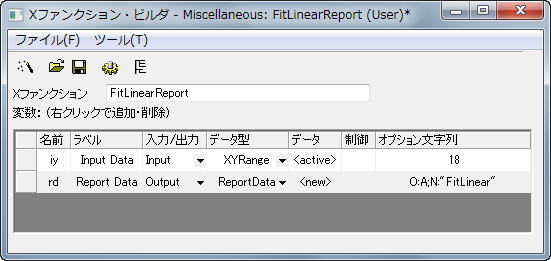

#include <ReportTree.h> // ReportTableクラスに必要
// ID はどの値でも良いが、固有である必要がある #define TABLE_ID 1 #define SUBNODE_ID_BEGIN 1000
// レポート表を作成 ReportTable rt; rt = rd.CreateTable("ReportData", "Fitted Data", TABLE_ID); int nSubID = SUBNODE_ID_BEGIN; DWORD dwRules = DRR_GET_DEPENDENT | DRR_NO_FACTORS; int nNumData = iy.GetNumData(dwRules); for(int nRange = 0; nRange < nNumData; nRange++) { DataRange drOne; iy.GetSubRange(drOne, dwRules, nRange); vector vx, vy; drOne.GetData(dwRules, 0, NULL, NULL, &vy, &vx); // 線形フィットには、2つのパラメータが存在 FitParameter sFitParameter[2]; if( STATS_NO_ERROR == ocmath_linear_fit(vx, vy, vy.GetSize(), sFitParameter) ) { // フィットXデータをレポート表に追加 string strName = "X" + (nRange+1); string strLongName = "X"; rt.AddColumn(vx, strName, nSubID++, strLongName, OKDATAOBJ_DESIGNATION_X); // フィットYデータを計算 double dIntercept = sFitParameter[0].Value; double dSlope = sFitParameter[1].Value; vector vFitY; vFitY = vx * dSlope + dIntercept; // フィットYデータをレポート表に追加 strName = "Y" + (nRange+1); string strRange; strRange = drOne.GetDescription(GETLC_COL_LN_ONLY); strLongName = "Fitted data on " + strRange; rt.AddColumn(vFitY, strName, nSubID++, strLongName, OKDATAOBJ_DESIGNATION_Y); } }